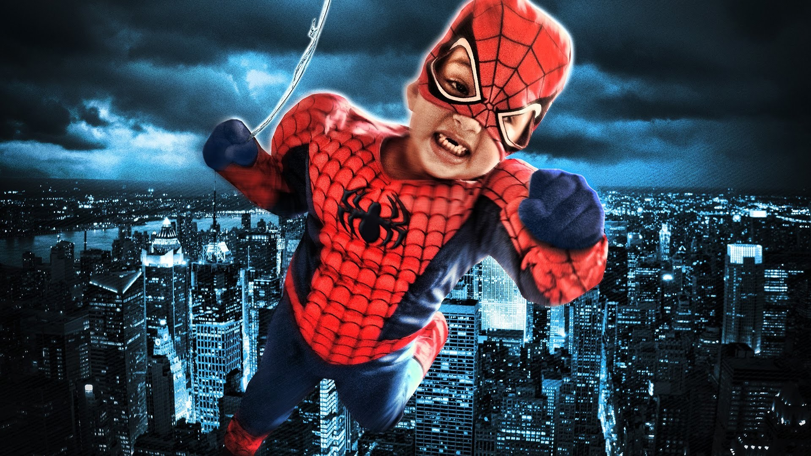

Человек-паук

Герой Дружелюбный сосед
Когда обычного подростка Питера Паркера укусил радиоактивный паук, его жизнь полностью изменилась. Теперь он борется с преступностью, скрываясь под маской Человека-Паука.
Ещё ребёнком Питер Паркер лишился родителей, а тётя Мэй и дядя Бен вырастили его как родного сына. Мальчик хорошо учился и добился больших успехов в естественных науках, из-за чего одноклассники не воспринимали его всерьёз, считая тихоней и зубрилой. На одной из научных выставок Питера укусил паук, заряженный мощной дозой радиации. Укус повлиял на генетическую структуру организма Питера, наделив парня суперсилой и уникальными способностями.
Желая заработать на своих новых силах, Питер сделал себе уникальный костюм и начал участвовать в боях без правил. Возвращаясь после очередной схватки, Питер отказался остановить грабителя, посчитав, что этим делом должна заниматься полиция. Позже этот же преступник наткнулся на дядю Бена и застрелил его, когда тот попытался дать ему отпор. Тогда Питер поклялся использовать свои силы для борьбы с преступностью, всегда держа в памяти слова дяди: «С великой силой приходит и великая ответственность».
У Человека-Паука множество опасных врагов, от которых он много раз защищал невинных жителей Нью-Йорка. Однако не все относятся к герою в маске положительно. Главный редактор газеты «Daily Bugle» Джей Джона Джеймсон в каждом выпуске пытался очернить героя, обвиняя во всевозможных преступлениях против общества. Питер Паркер решил использовать это в своих целях, устроившись в газету внештатным фотографом и поставляя на регулярной основе снимки Человека-Паука.
Человек-Паук обладает множеством уникальных способностей и является одним из самых сильных супергероев. Он может передвигаться по стенам и потолку, легко поднять предмет весом в десять тонн. Комбинация из акробатических трюков и искусственной паутины позволяет ему быстро двигаться, а сверхбыстрые рефлексы и «паучье» чутьё, помогают ему избегать ранений и предугадывать действия противника.
Ещё до укуса паука Питер Паркер был одним из самых умных людей на планете, его IQ близок к гениальности. Он прекрасно разбирается в химии, физике, биологии и инженерии. Благодаря обширным познаниям в инженерии, Питер смог самостоятельно усовершенствовать свой костюм веб-шутерами с сверхпрочной искусственной паутиной.